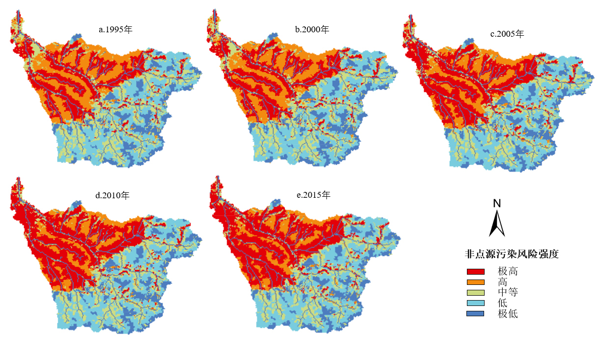
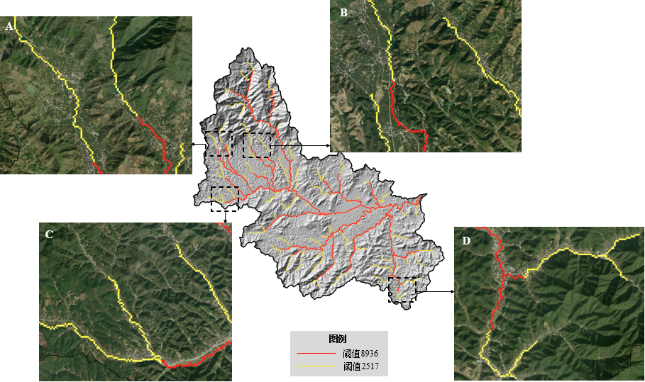
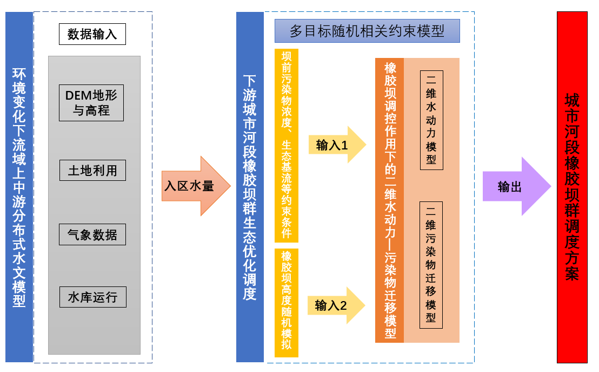
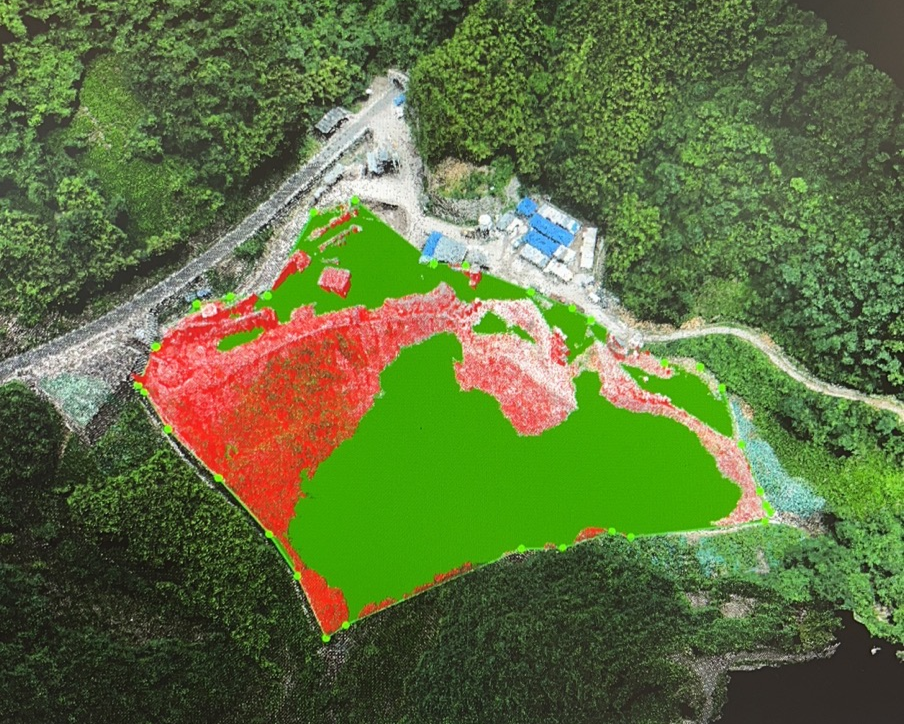
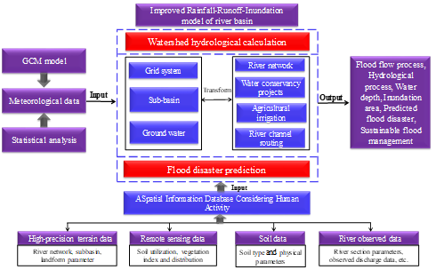
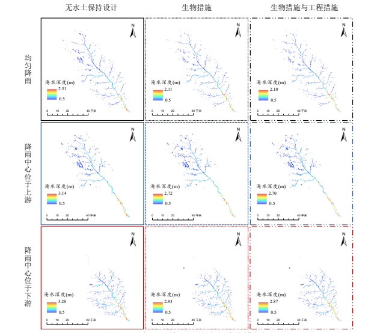
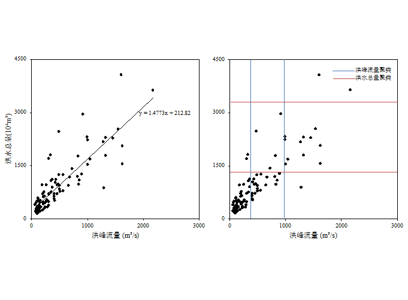

|
MA.Sc | 水利工程师 中国三峡集团上海勘测设计研究院（SIDRI）、上海 E-mail : ni2nini@outlook.com |
2020年至2023年在中国三峡集团上海勘测设计研究院任水利工程师、 主要从事水土保持与环境相关的设计、规划及监测工作。
2020年从长安大学硕士毕业。
我的前期研究主要基于分布式模型的流域风险评估，目前兴趣集中在Google Earth Engine（GEE）等平台的环境建模及数据可视化。
|  |
土地利用变化影响的灞河流域潜在非点源污染风险时空变化特征
聂启阳, 吕继强, et al.
|
|  |
基于双侧均值变点法的数字河网阈值划定——以南苕溪流域为例
聂启阳
|
|  |
已授权发明专利: 一种城市河流橡胶坝群水生态调控方法
吕继强,聂启阳, 薛强, et al.
|
|  |
"基于高分辨率DEM、DOM数据的水土流失预测与评估数字化软件开发。"
项目负责人
|
|  |
气候变化和人类活动对西北黄土高原洪涝灾害的影响研究
主要参与人
|
|  |
城市雨洪大数据预警机制、资源化利用理论和海绵化设计方法
参与人
|
|  |
变化环境下黄土高原区径流演变机理研究
参与人
|